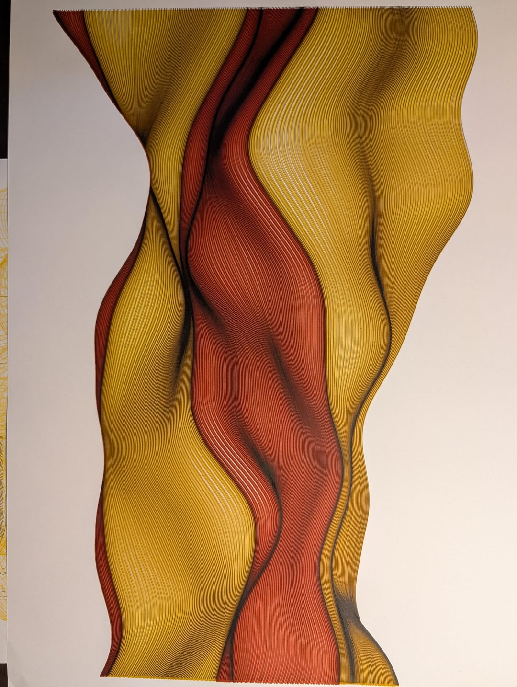
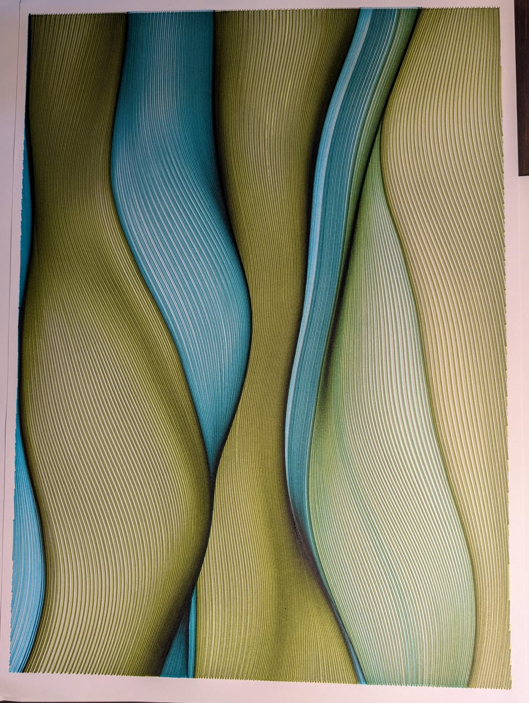

Curtain Series I — Ember
Warm reds and golds folding into deep vertical drapes, rendered as dense parallel line work.
Artistic side
Flowing, hand-drawn line work — each piece built from hundreds of parallel curved strokes that fold and pool like fabric caught mid-motion.

Warm reds and golds folding into deep vertical drapes, rendered as dense parallel line work.

Teal and olive tones twisting through the same folded-curtain structure, in a cooler register.